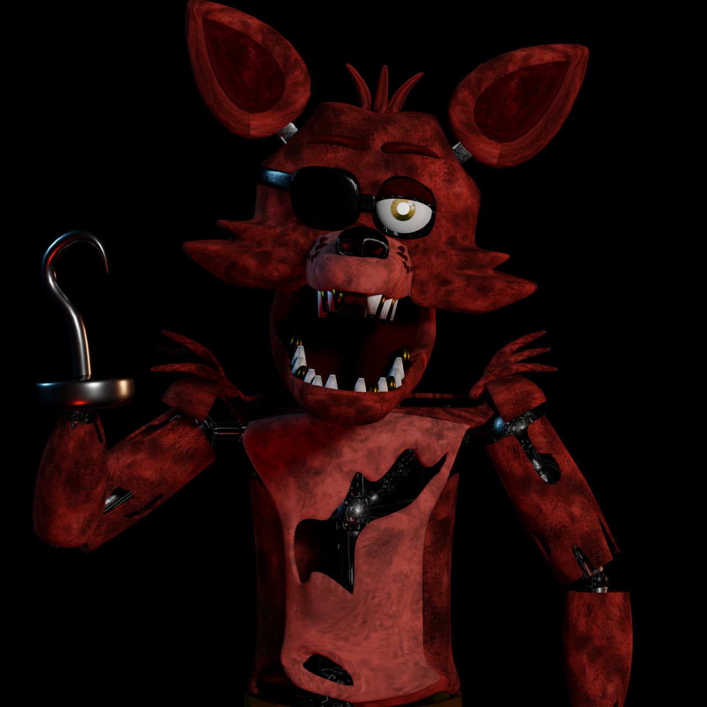
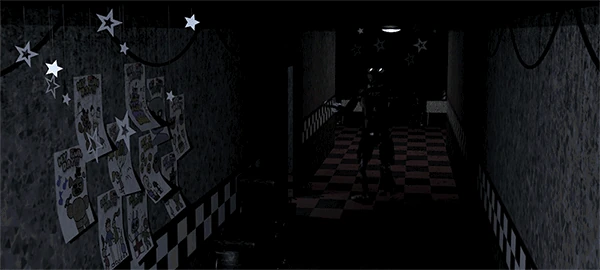
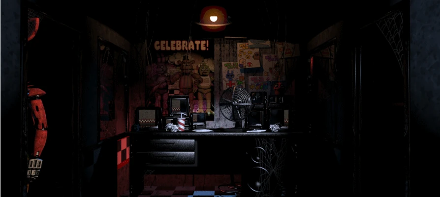

Aparência

Foxy é uma grande raposa animatrônica de cor marrom-avermelhado. Ele tem um gancho em sua mão direita e um tapa-olho em seu olho direito, Porém geralmente visto acima de seu olho, ao invés de tampá-lo.

